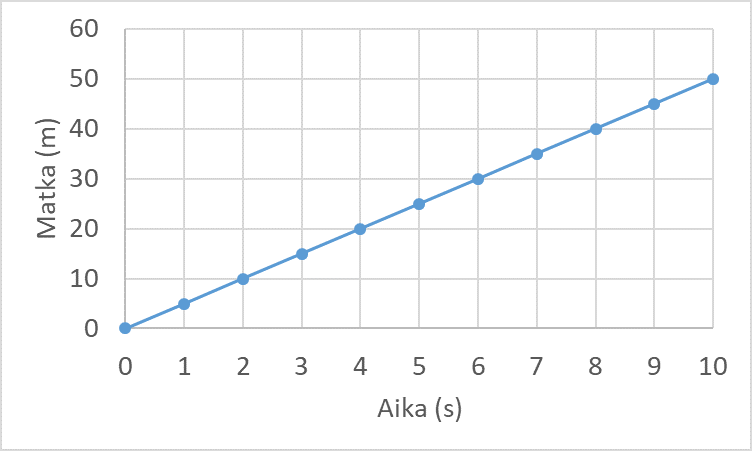
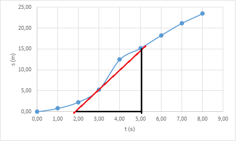
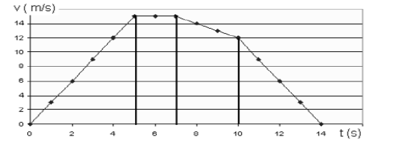

Suoraviivainen tasainen liike
Contents
Suoraviivainen tasainen liike#
Suoraviivaisessa liikkeessä kappale liikkuu suoraan yhteen suuntaan. Kappaleen nopeus pysyy ainakin tietyllä aikavälillä samana. Kappaleen paikka eri ajanhetkillä ilmaistaan esimerkiksi \(x\)-koordinaatilla. Kappaleen keskinopeus \(v_k\), jota usein merkitään myös ilman alaindeksiä eli \(v\), on kappaleen paikan muutos jaettuna kuluneella ajalla:
\(v_k=\frac{\Delta x}{\Delta t} = \frac{x_2-x_1}{t_2-t_1}\).
Kaavassa merkki \(\Delta\) (kreikkalainen kirjain delta) kuvaa yleisesti jonkin suureen arvon muutosta. Jos lähtöhetkeksi valitaan \(t_1=0\) s ja lähtöpaikaksi \(x_1=0\) m, yhtälö voidaan esittää muodossa
\(v_k=\frac{x}{t}\)
eli ilman alaindeksejä, sillä nythän yhtälössä on jäljellä vain yksi matka ja yksi aika, eikä ole tarvetta erottaa eri nopeuksia tai aikoja alaindekseillä. Usein myös alaindeksi \(k\) jätetään nopeudesta pois, eli keskinopeutta merkitään vain \(v\).
Nopeuden yksikkö on SI-järjestelmässä \(\frac{\text{m}}{\text{s}}\), mutta usein esimerkiksi autoiluun liittyvissä ongelmissa \(\frac{\text{km}}{\text{h}}\). Muuntaminen yksiköstä \(\frac{\text{km}}{\text{h}}\) yksikköön \(\frac{\text{m}}{\text{s}}\) onnistuu kirjoittamalla kilometri metreinä ja tunti sekunteina:
\(1~\frac{\text{km}}{\text{h}} = \frac{1000~\text{m}}{3600~\text{s}} = \frac{1000}{3600}~\frac{\text{m}}{\text{s}}=\frac{1}{3.6} ~\frac{\text{m}}{\text{s}}\)
Esim. \(20~\frac{\text{km}}{\text{h}} = 20\cdot \frac{1}{3.6}~\frac{\text{m}}{\text{s}} = \frac{20}{3.6}~\frac{\text{m}}{\text{s}} = 5.6 ~\frac{\text{m}}{\text{s}}\)
Edellisestä saadaan ratkaistua myös muunnos toiseen suuntaan: \(1~\frac{\text{m}}{\text{s}}=3.6 \frac{\text{m}}{\text{s}}\)
Esim. \(15~\frac{\text{m}}{\text{s}}=15\cdot 3.6~\frac{\text{km}}{\text{h}}=54~\frac{\text{km}}{\text{h}}\)
Kaavasta \(v=\frac{x}{t}\) voidaan ratkaista mikä tahansa suureista (nopeus, matka tai aika), kun kaksi muuta tunnetaan. Jos matka koostuu osista, joilla keskinopeus vaihtelee, niin koko matkan keskinopeuden laskemiseksi kaavaan pitää laittaa matkaksi kokonaismatka ja ajaksi kokonaisaika. Eri osuuksilla kuluva aika pitää laskea erikseen jokaiselle osuudelle. Erityisesti pätee se, että jos puolet matkasta liikutaan nopeudella \(v_1\) ja puolet matkasta nopeudella \(v_2\), niin keskinopeus koko matkalla ei yleensä ole nopeuksien keskiarvo.
Esimerkki
a) Laske keskinopeus, kun liikutaan 23 km 14 minuutissa.
b) Kuinka kauas päästään, kun ajetaan 20 minuuttia keskinopeudella 85 km/h?
c) Kuinka kauan kestää ajaa 60 km matka keskinopeudella 80 km/h ?
Ratkaisu
a) Ilmaistaan aika tunteina: \(14~\text{min}=\frac{14}{60}~\text{h}\)
Tällöin keskinopeus on \(\frac{23~\text{km}}{\frac{14}{60}\text{h}}\approx 99~\frac{\text{km}}{\text{h}}\)
Laskimeen, esimerkiksi WolframAlphaan, lasku pitää kirjoittaa muodossa 23/(14/60) eli kirjoittamalla jakajan ympärille sulut. Ilman sulkuja keskinopeudeksi tulee noin 27 metriä tunnissa. Laskun tuloksen järkevyys kannattaa aina tarkistaa!
b) Yhtälöstä \(v=\frac{s}{t}\) on ratkaistava matka \(s\). Kerrotaan yhtälön molemmat puolet ajalla \(t\), jolloin saadaan \(vt=s\). Siis
\(s=85~\frac{\text{km}}{\text{h}}\cdot \frac{20}{60}~\text{h} \approx 28~\text{km}\)
c) Ratkaistaan yhtälöstä \(v=\frac{s}{t}\) aika \(t\). Kerrotaan jälleen yhtälön molemmat puolet ajalla \(t\), jotta se saadaan pois murtoluvun nimittäjästä. Tällöin yhtälö muuttuu muotoon \(vt=s\). Sen jälkeen pitää vielä jakaa yhtälön molemmat puolet nopeudella \(v\). Saadaan siis tulos
\(t=\frac{s}{v}=\frac{60~\text{km}}{80~\frac{\text{km}}{\text{h}}}=\frac{60}{80}~\text{h} = \frac{60}{80}\cdot 60~\text{min}=45~\text{min}\)
Esimerkki
Autolla ajetaan ensin 120 km keskinopeudella 85 km/h ja sitten vielä 50 km keskinopeudella 100 km/h. Laske keskinopeus koko matkalla.
Ratkaisu
Nopeuden määritelmä \(v=\frac{x}{t}\) voidaan ratkaista aika: \(t=\frac{x}{v}\). Lasketaan erikseen eri osuuksille kuluvat ajat:
\(t_1=\frac{x_1}{v_1}=\frac{120~\text{km}}{85~\frac{\text{km}}{\text{h}}} = 1.412~\text{h}\)
\(t_2=\frac{x_2}{v_2}=\frac{50~\text{km}}{100~\frac{\text{km}}{\text{h}}} = 0.5~\text{h}\)
Koko matkalla keskinopeus on \(v=\frac{x_1+x_2}{t_1+t_2}=\frac{120~\text{km}+50~\text{km}}{1.412~\text{h}+0.5~\text{h}}=88.9~\frac{\text{km}}{\text{h}}\).
Esimerkki
Pyöräilijä A lähtee polkemaan kotoa klo 10:00. Hänen keskinopeutensa on 15 km/h. Pyöräilijä B lähtee polkemaan samasta paikasta samaan suuntaan klo 10:20. Hänen keskinopeutensa on 22 km/h. Mihin aikaan ja miten kaukana kotoa pyöräilijä B saavuttaa pyöräilijän A?
Ratkaisu
Merkitään pyöräilijän B lähtöhetkestä 10:15 kulunutta aikaa \(t\). Tällöin pyöräilijä B on edennyt pisteeseen \(22t\). Samassa ajassa pyöräilijä A on liikkunut matkan \(15t\), mutta lisäksi ennen B:n lähtöä hän ehti polkea 20 minuuttia, siis matkan \(15~\frac{\text{km}}{\text{h}}\cdot \frac{20}{60}~\text{h}\). Kysytyllä hetkellä pyöräilijät ovat samassa paikassa, joten
\(22t=15t+15~\frac{\text{km}}{\text{h}}\cdot \frac{20}{60}~\text{h}\)
Yhtälöstä ratkeaa:
\(22t-15t=15~\frac{\text{km}}{\text{h}}\cdot \frac{20}{60}~\text{h}\)
\(7t=15~\frac{\text{km}}{\text{h}}\cdot \frac{20}{60}~\text{h}\)
\(t=\frac{1}{7}\cdot 15~\frac{\text{km}}{\text{h}}\cdot \frac{20}{60}~\text{h}\)
\(t\approx 0.714 ~\text{h}=43~\text{min}\)
Tällöin pyöräilijä B on paikassa \(22~\frac{\text{km}}{\text{h}} \cdot 0.714~\text{h} \approx 15.7~\text{km}\) ja A on tietysti samassa paikassa (sen laskeminen on vapaaehtoinen harjoitustehtävä). Kello olisi tuolloin noin 11:03.
Tehtävän voi ratkaista myös siten, että kirjoittaa yhtälön esimerkiksi WolframAlphan ratkaistavaksi muodossa 22*t=15*t+20/60*15.
Kuvaajia#
Graafinen esitys on usein selkein tapa ilmaista fysiikan sovelluksiin liittyvää tietoa. Liikettä voidaan esittää (aika, paikka) -kuvaajalla tai (aika, nopeus) –kuvaajalla. Merkintä (aika, paikka) tarkoittaa, että kuvaajan vaaka-akselina on aika ja pystyakselina paikka.
Tasaisen liikkeen (aika, paikka) -kuvaajassa keskinopeus on kappaleen paikkaa kuvaavan suoran kulmakerroin. Kulmakerroin kertoo yleisesti, kuinka paljon pystyakselin arvot muuttuvat, kun vaaka-akselin arvot muuttuvat tietyn verran. Jos suora nousee jyrkästi yläviistoon, niin paikka muuttuu lyhyessä ajassa paljon, eli kappaleen nopeus on suuri.

Esimerkki
Laske oheisesta (aika, paikka) -kuvaajasta nopeus esim. ajanhetkien 2 s ja 6 s ja niitä vastaavien sijaintien avulla.
Ratkaisu
\(v=\frac{30~\text{m}-10~\text{m}}{6~\text{s}-2~\text{s}}=\frac{20~\text{m}}{4~\text{s}}=5~\frac{\text{m}}{\text{s}}\)
Sama tulos saadaan valitsemalla mitkä tahansa muutkin kaksi ajan ja paikan pistettä.
Jos liike ei ole tasaista, niin (aika, paikka) -kuvaajasta voidaan määrittää hetkellinen nopeus. Se tarkoittaa keskinopeutta hyvin lyhyellä aikavälillä. Hetkellinen nopeus voidaan laskea piirtämällä käyrää sivuava suora ja laskemalla sen kulmakerroin. Piirretään siis halutun pisteen kohdalle suora, jonka lähelle nopeuskäyrä asettuu symmetrisesti pisteen molemmin puolin. Jatketaan suoraa riittävän pitkälle molempiin suuntiin, jotta saadaan luettua suureille jotkin arvot.
Matemaattisesti ilmaistuna nopeus on matkan derivaatta. Derivaatan laskussa tuo käyrää sivuava suora olisi äärettömän lyhyt. Tämä laskutoimitus ei kuulu fysiikan opintojakson vaatimuksiin.

Esim. Kuvassa hetkellinen nopeus hetkellä \(t=3~\text{s}\) on noin \(\frac{15~\text{m}}{3~\text{s}}=5~\frac{\text{m}}{\text{s}}\).
(Aika, nopeus) –kuvaajasta saadaan kuljettu matka laskemalla nopeuskäyrän ja aika-akselin väliin jäävä pinta-ala. Jos nopeus on tasainen, kuvaaja on vaakasuora viiva, ja matka on \(x=v\cdot t\) eli sama kaava joka saadaan myös keskinopeuden määritelmästä.
Jos nopeus muuttuu, nopeuskäyrä voidaan jakaa osiin, joissa nopeus on likimain vakio. Matka saadaan näiden osien ja aika-akselin väliin jäävien alueiden summana. Osien muoto valitaan nopeuskäyrän mukaan.
Tarkalleen ottaen matka on nopeuden määrätty integraali. Tällöin nopeuskäyrä jaettaisiin äärettömän moneen, äärettömän kapeaan osaan, ja sitten laskettaisiin näiden osasten pinta-ala. Tähänkin tarvitaan hieman enemmän matemaattisia valmiuksia.
Esimerkki
Seuraava kuva esittää auton nopeutta liikennevalojen välillä. Määritä liikennevaloristeyksien välimatka.

Ratkaisu
Kokonaismatka on osista laskettujen matkojen summa.
Ensimmäinen kolmio: \(s_1=\frac{1}{2} \cdot 5~\text{s}\cdot 15~\text{m/s}=37.5~\text{m}\)
Suorakulmio: \(s_2=2~\text{s}\cdot 15~\text{m/s}=30~\text{m}\)
Puolisuunnikas: \(s_3=3~\text{s}\cdot \frac{15~\text{m/s}+12~\text{m/s}}{2} = 40.5~\text{m}\)
Toinen kolmio: \(s_4=\frac{1}{2}\cdot 4~\text{s}\cdot 12~\text{m/s}=24~\text{m}\)
Yhteensä \(s=s_1+s_2+s_3+s_4=132~\text{m}\)